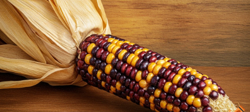

Saberes, técnicas y territorios que dan forma a nuestra cocina
Los ingredientes esenciales que han marcado la gastronomía de nuestra región.
Base ancestral
Diversidad Andina
Identidad y carácter
Raíces y tradición
Métodos ancestrales que conectan pasado y presente en la cocina.

Territorios culinarios donde se mezclan ingredientes y tradiciones.
Métodos ancestrales que conectan pasado y presente en la cocina.
Tradiciones llenas de sabor
Sabores de nuestro día a día
Alimentos rituales en la cultura